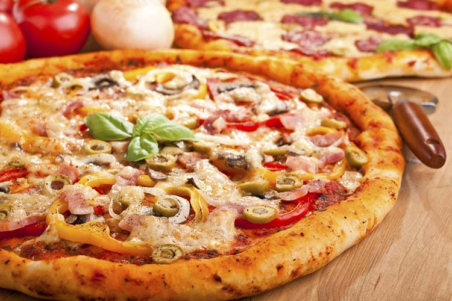

Pizza

Pizza Mozarella
This is a delicious recipe for a mozzarella pizza
Ingredient:
- 1 kg of Flour
- 650 cubic centimeters of warm water
- 40 grams of fresh Yeast
- 1 teaspoon of sugar
- 2 teaspoons of salt
- 4 tablespoons olive oil
- 2 cans of Natural Tomatoes
- 300 grams of Mozzarella
Preparation:
- Crush the yeast and dissolve it in the warm water.
- Place the flour in the form of a crown on a wooden table and pour in the center, little by little, the water with the diluted yeast. Combine the dough, add the olive oil and the salt and knead until obtaining a well elastic bun.
- Place in a bowl and cover with a scraper letting it leaven for 30 minutes, until doubled its volume.
- Beat that time, cut four pieces, stretch in pizzeras and leave leudar another 30minutes. Just then cook at high temperature and couple for 20 minutes.
- Meanwhile prepare 2 cans of chopped tomato that seasoned with olive oil, salt and oregano and spread over the pizzas. Place over half a cup of chopped mozzarella and give it a bake until golden and crispy.
I love you more than the last slice of pizza